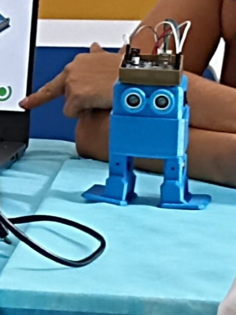
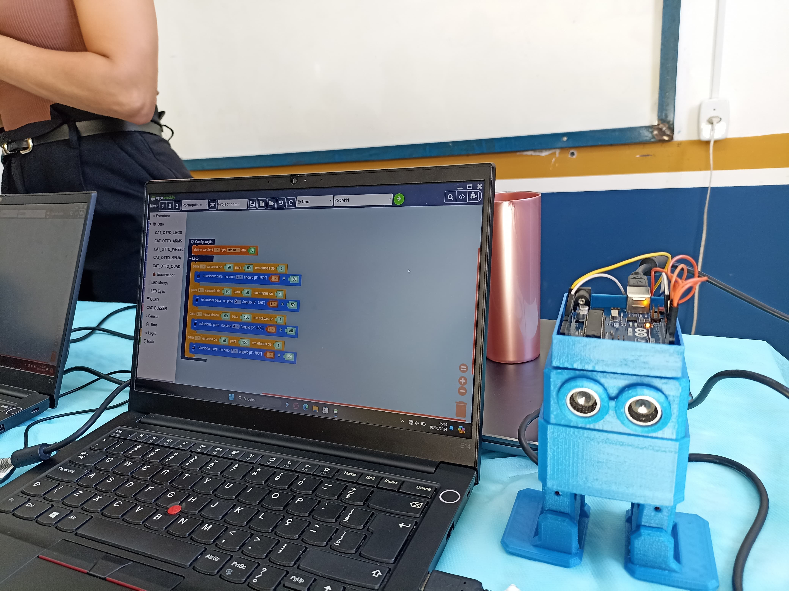

Robô Otto Desenvolvido no IFMA
Otto é um robô que foi desenvolvido no laborátorio MaraMaker para o projeto Explorando a Criatividade e a Lógica Através da Robótica para Alunos dos Núcleos de Altas Habilidades e Superdotação da grande Ilha de São Luis-MA
 